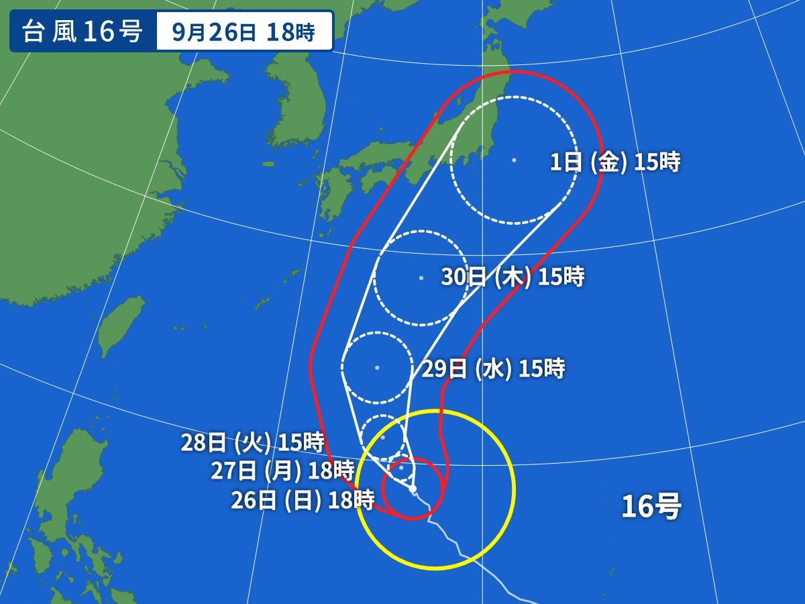

EWRS共有局
台風16号要警戒

2021年09月26日19時12分現在、猛烈な台風16号は、沖ノ鳥島近海でほとんど停滞しています。
10月1日には非常に強い勢力で関東付近に接近する恐れがあります。早めの警戒をしてください。
最大風速55m/s 最大瞬間風速75m/s 中心気圧920hPa
現在発表されている警報・特別警報
2021年09月26日19時12分現在、発表されている警報・特別警報はありません。